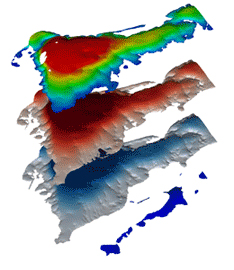
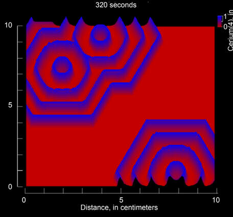

Skills
Throughout my time at Middlebury, I have become proficient in several coding languages and modeling softwares

Python
In the fall of 2022 I took a class called "Computing for the Sciences". I earned an A in the class. This was an introductory computer science class geared towards students interested in mathematics and natural sciences.

R
During the winter term of 2022, I took a deep dive into programming with R. In "Reproducible Biology with R" I learned how to wrangle large datasets and create publication quality figures. Here is my final portfolio of notes, assignments, and projects. Topics included but were not limited to:
QGIS
In the spring of 2023, I took an intro to GIS class which sparked my passion for creating thematic maps. This course helped me get a summer internship at the Blueberry Hill Outdoor Center where I created several maps of the trail network. Following this internship, I took a class in mapping environmental change where we learned how to use Google Earth Engine.
Modeling in Earth and Climate Sciences
Throughout my work in the Earth and Climate Sciences major, I have worked with several modeling softwares for different purposes.

ModelMuse
I learned how to use ModelMuse in my Hydrogeology class during the spring of 2022. We specifically worked with the MODFLOW 6 program developed by the USGS. We used the program to quantify and visualize groundwater flow around the margins of a small lake.
Jupyter Notebooks

I learned how to work with Jupyter Notebooks during the spring of 2022 in my Climate Dynamics class. We worked with simple climate models to draw conclusions about phenomena in the atmosphere, ocean, ice sheets and more. We worked in Python with matplotLib, numpy, xarray, and pandas to create our visualizations.
PHREEQC

During the fall of 2021, I worked with a program called PHREEQC in my Environmental Geochemistry class. This program performs aqueous geochemical calculations and is written in the C++ language. I coordinated with Peter Wade, who is an expert in the program, to work towards a model of silicate rock weathering based on lab experiments we had run. While we did not achieve a final product, other ECSC students are currently working towards creating a publication quality paper using the work that my classmates and I spearheaded.